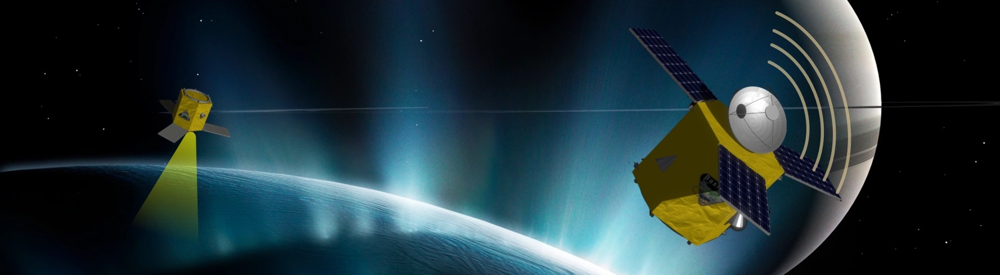
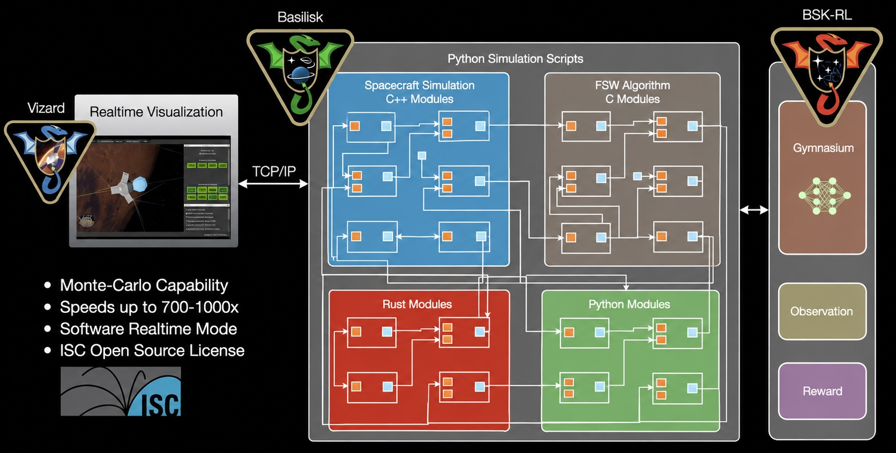

Welcome to Basilisk: an Astrodynamics Simulation Framework
{kind=link}

Tip
The documentation for the tagged release is found at https://avslab.github.io/basilisk, while the documentation for the latest beta release is found at https://avslab.github.io/basilisk/develop.
Architecture
Basilisk, or BSK for short, is a software framework capable of both faster-than realtime spacecraft simulations, including repeatable Monte-Carlo simulation options, as well as providing real-time options for hardware-in-the-loop simulations. The Basilisk package is designed as a Python package containing modules implemented in C, C++, Python, and Rust. This provides the scripting and reconfigurability of Python while compiled C, C++, and Rust modules provide high execution speed. The software is being developed jointly by the University of Colorado AVS Lab and the Laboratory for Atmospheric and Space Physics (LASP). The resulting framework is targeted for both astrodynamics research modeling the orbit and attitude of complex spacecraft systems, as well as sophisticated mission-specific vehicle simulations that include hardware-in-the-loop scenarios.
{kind=link}

A companion Visualization program is called Vizard. This stand-alone program is based on the Unity rendering engine and can display the Basilisk simulation states in an interactive manner. The second companion software is BSK-RL which is used to use Basilisk for reinforcement training.
What is Basilisk Used For?
This software is being actively used for:
astrodynamics research to model complex spacecraft dynamical behaviors
developing new guidance, estimation and control solutions
supporting mission concept development
supporting flight software development
supporting hardware in the loop testing by simulating in realtime the spacecraft states
analysis of flight data and compare against expected behavior
supporting spacecraft AI based autonomy development
Basilisk Design Goals
The Basilisk framework is being designed from inception to support several different (often competing) requirements.
Speed: Even though the system is operated through a Python interface, performance-critical simulation modules can execute in C, C++, or Rust without Python interpreter overhead. For example, a goal is to simulate a mission year with sufficiently accurate vehicle 6-DOF dynamics with at least a 365x speed-up (i.e. a year in a day).
Reconfiguration: The user interface executes natively in Python which allows the user to change task-rates, model/algorithm parameters, and output options dynamically on the fly.
Analysis: Python-standard analysis products like numpy and matplotlib are actively used to facilitate rapid and complex analysis of data obtained in a simulation run without having to stop and export to an external tool. This capability also applies to the Monte-Carlo engine available natively in the Basilisk framework.
Hardware-in-the-Loop: Basilisk will provide synchronization to realtime via software-based clock tracking modules. This allows the package to synchronize itself to one or more timing frames in order to provide deterministic behavior in a realtime environment.
Scriptability: The Python user interface to the compiled C, C++, and Rust layers relies on the Simplified Wrapper and Interface Generator (SWIG) software, a cross-platform, open-source software for exposing compiled interfaces to scripting languages. Native Rust modules use a generated C-compatible interface with the common C++/SWIG wrapper. This Python layer allows the simulation to be easily reconfigured which allows the user complete freedom in creating their own simulation modules and flight software (FSW) algorithm modules. Further, the Python layer abstracts logging/analysis which allows a single compilation of the source code to support completely different simulations.
Controlled Data Flow: Simulation modules and FSW algorithm modules communicate through the message passing interface (MPI), which is a singleton pattern. The MPI allows data traceability and ease of test. Modules are limited in their ability to subscribe to messages and write messages, thus setting limitations on the flow of information and the power of modules to control data generation. The messaging system is also instrumented to track data exchange, allowing the user to visualize exactly what data movement occurred in a given simulation run.
Cross-Platform Solution: Basilisk is inherently cross-platform in nature, and is supported on macOS, Windows, and Linux systems. The Python layer, C programming language, ZeroMQ communication library and Unity visualization are active cross-platform developments.
Validation and Verification: Each simulation or FSW algorithm module has unit tests that can be run automatically using
pytest. Integrated scenario tests validate coupled behavior between modules. Each dynamics module has associated momentum, energy and power validation tests. This ensures the integrity of the validated modules as new simulation capabilities are added.Monte-Carlo Capability: The simulation framework is capable of doing bit-for-bit repeatable Monte-Carlo runs. The simulation parameters can be disturbed through a range of distribution functions.
3D Visualization: Basilisk has an accompanying stand-alone visualization called Vizard that uses Unity to visualize the spacecraft, its orientation and orbits, the local planets, and various qualitative data and indicators for sensors and actuators. Simulation events and device faults may be triggered directly from the visualization.